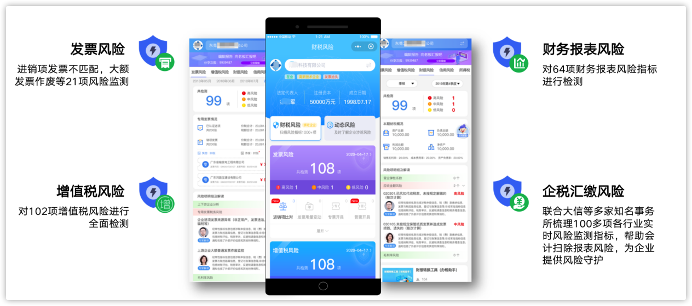

掌税保，自出世以来，一直深深扎根于广大财税同行之中，汲取专业营养，又以高度专业精神反哺同行。伴随我们的同行日益增多，更加促使我们的产品不断完善，持续进步。
经过2年的产品不断发展，依托全新的大数据分析技术，在经过广泛交流、研讨的基础上，掌税保将升级为全新的产品：金财卫士。
- 金财卫士在掌税保的优势基础上，针对企业提前合规、降负、增利的需求，在原有功能的基础上，全新增加了下列强大的升级：
- 1多维度，多视角，智能分析全网公开数据及企业财税涉密数据，通过直观，易懂，图表方式呈现。
- 2诸多财税专家，打造严谨风控模型，并提供分析和对策建议，让你报税更安心。
- 3提供行业专家预约咨询服务，包括风险疑点的解读，财税问题筹划，政策分析、实务培训、业务咨询等服务。
- 4通过大数据技术，全新提供了自动扫描各监管部门所公示信息，采集舆情品牌导向的动态风险扫描。
- 金财卫士小程序，使用目前最前沿的小程序技术，让用户可以随时随地查看自己企业的财税风险，财税数据一目了然，并且可以快速分享报告给相关人员。

- 您的账号已经同步升级到金财卫士小程序，请您长按识别下列二维码，使用原有手机号登陆即可使用。